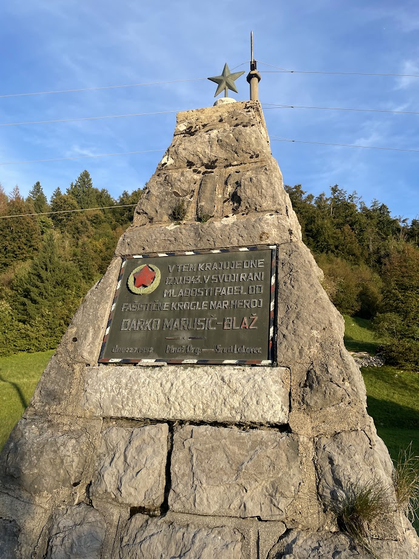

跨民族游擊隊的自主崛起：1941–1948 南斯拉夫如何自己建國？
1941 年軸心國肢解南國並發動百人質屠殺與清洗；狄托（Josip Broz Tito）淡化共產口號，憑「兄弟情誼與團結」人民陣線與西班牙老兵從游擊成長為逾 80 萬大軍，自主解放並抗衡蘇聯。
1941 年軸心國肢解南斯拉夫，百人質報復與清洗逼出反抗
1941 年 4 月軸心國（Axis powers）閃電肢解南斯拉夫王國：納粹德國在塞爾維亞設歐陸唯一純軍事政權，執行「每殺一德兵處決 100 名平民、傷一兵殺 50 人」之嚴厲報復（克拉列沃 2,000 死、克拉古耶瓦茨 3,000 死）。
德國主導的「克羅埃西亞獨立國」（NDH）執政者烏斯塔沙（Ustaše）對塞族展開種族滅絕，卻又割讓北達爾馬提亞給義大利；佔領與清洗暴行迫使各族平民把抵抗當成求生出路，大量克族亦轉投游擊隊。

狄托淡化共產口號高喊「兄弟情誼」，西班牙老兵返鄉扛骨幹
狄托宣傳刻意 played down communism，藉聯合陣線與代議機構以「兄弟情誼與團結」（brotherhood and unity）跨越族群（惟戰初塞族仍佔多數並偶有磨擦）。
1941 年 4–6 月南共（KPJ）受《德蘇互不侵犯條約》約束先囤槍未動；德軍發動「巴巴羅薩行動」當天即於錫薩克起義，7 月全面展開武裝反抗。
逾千名曾參與西班牙國際縱隊的南斯拉夫老兵返鄉入列（如斯洛維尼亞前線），帶來境內獨一無二的現代游擊戰經驗與指揮骨幹，成擴軍關鍵。
全民動員擴軍逾 80 萬並建海空軍 vs. 保皇切特尼克排他通敵
200 萬女性加入反法西斯婦女陣線（AFŽ）且約 10 萬女戰士（partizanke）上火線；達爾馬提亞漁船組成 3,000 人海軍，1942 年獲駕機投誠建成歐陸罕見抵抗空軍。
切特尼克因大塞族清洗失去非塞族兵源，1943 年英軍目擊德軍搭火車通過其防區與 ULTRA 截密，促使盟國於德黑蘭會議將軍援全轉狄托。
1945 自主光復、戰後大清洗爭議與 1947–1948 狄托－史達林分裂
1944–1945 年游擊隊於布萊堡（Bleiburg）等地無差別處決撤退 NDH、切特尼克及平民，坦納（Marcus Tanner）估約 8 至 10 萬人遇害；戰後 SUBNOR 與左翼捍衛反法西斯功績。
官方至 1980 年代末皆將清洗列為禁忌；南國解體後長期沉默引爆數據操弄與否定游擊隊的歷史修正主義反彈（另 1942 年兵力存 23.6 萬與 13.5 萬統計落差）。
全系列收官：五國比較歷史的三個核心洞見
兩次大戰與內戰打碎舊中央後（俄國蘇維埃、德國委員會、中國土自衛與黨軍、西班牙公社、南國解放陣線），地方力量才有機會接管秩序並爭奪全國前途。
單靠革命理想卻缺紀律整合常敗（如馬赫諾與西班牙工團）；反之如俄紅軍起用舊軍官、中共敵後土改減稅或南共跨民族聯合陣線，將基層動員化為實權。
白俄坦克、契卡與西班牙老兵證明歐亞戰場彼此相連；面對紅白恐怖、皖南開火與戰後清洗，須並陳史家對立並誠實面對史料空白。